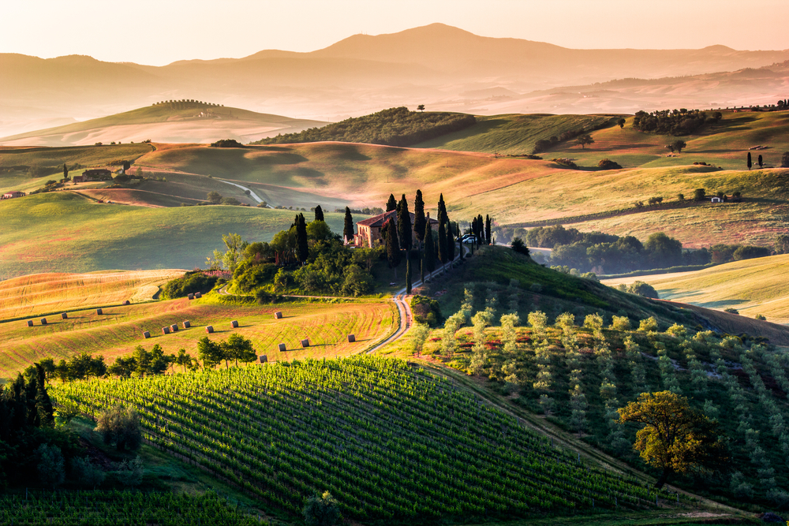
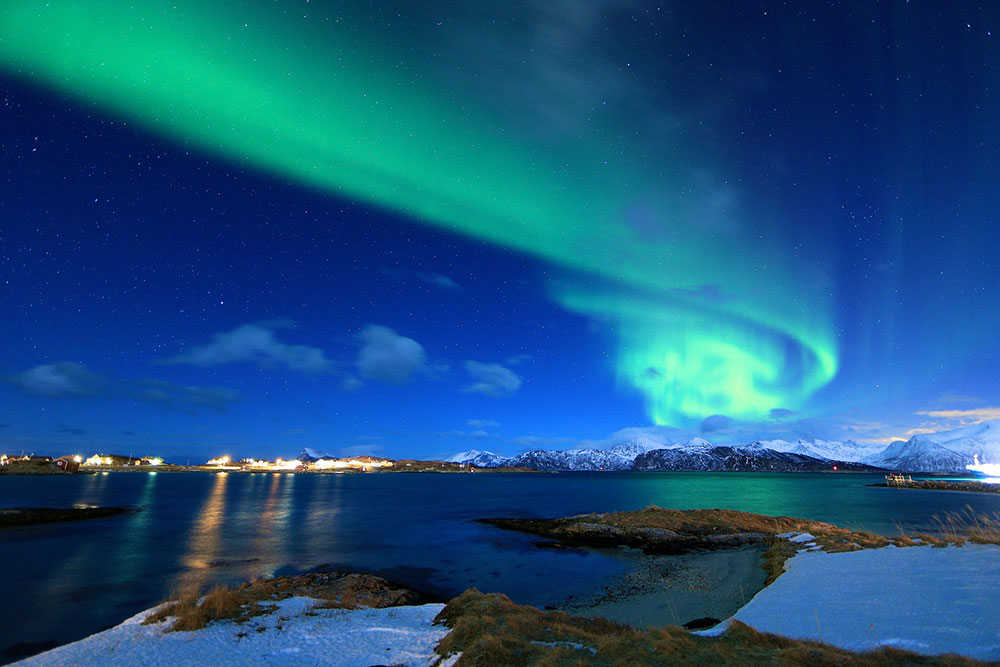

Tuscany Countryside,Italy
There’s no other place on earth like the Tuscan countryside and easily one of the best things to do in Italy is taking a drive away from the cities and head into some of the most beautiful scenery in the world.
Stockholm,Sweeden
Welcome to Stockholm, one of the world’s most beautiful capitals. Built on 14 islands around one of Europe’s largest and best-preserved mediaeval city centres, the city is stunningly located by the Baltic Sea.

Tromso,Norway
This northern town is considered Norway’s gateway to the arctic.
you can experience the Arctic conditions but at a more friendly
temperature. One of the biggest attractions of the town
is the display of the Northern Lights.